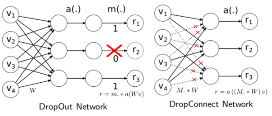
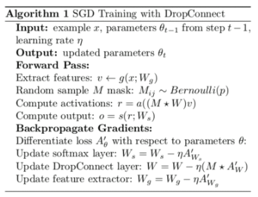
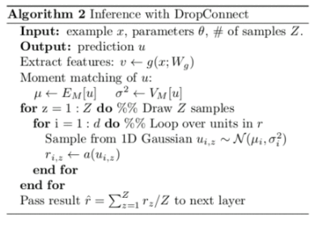
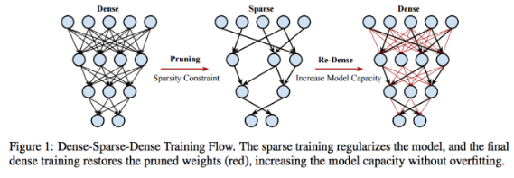
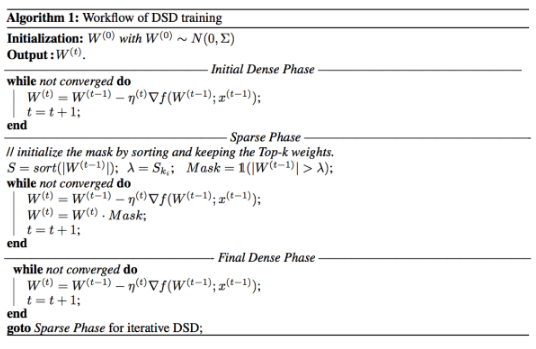
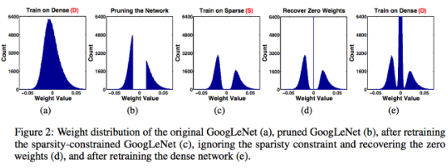
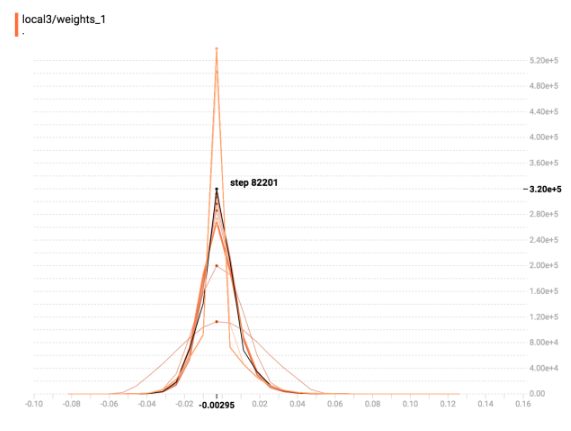
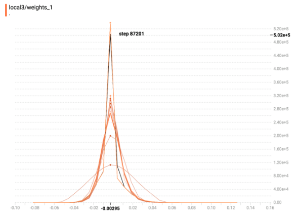
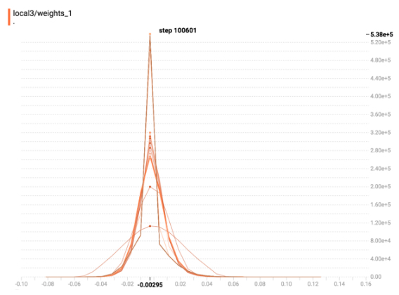

Dropout的瑜亮之争
Table of Contents
一 导言
类神经网络是由一系列的 connection 和 node 组成，某一层的 node 数量越多，与它相关的 connection 的数量通常也会随着增加。当网络叠深、变复杂的时候，参数的数量也会大量增加，这时候就需要考虑 over-fitting 的问题。
传统的机器学习常会使用 regularization term 来维护 validation 和 testing 的品质。在深度学习中，除了 regularization ， dropout 和 drop-connect 也是常见的架构。
dropout 1的概念，在于训练时以一定机率(drop-rate)把网络中的某些 node 的数值舍弃，即归零。 drop-connect 也使用相似的方法，但它舍弃的是 connection 而非=node= 。上述两个方法，都有随机的成份在，亦即当 drop-rate 定好之后，每个
node 或 connection ，都有可能被舍弃，不论它们的数值大小、正负。
针对这一个部分，另一个架构： Dense-Sparse 2给了不一样的观点。
connection 的绝对值大小，其实某种程度上说明了它的重要性，代表该层的 node 对下一层某个 node 的影响程度。既然我为了避免 over-fitting ，需要减少
connection 的数量，那么何不直接去掉 影响程度较低 的那些 connection 呢？比起 随机丢弃 ，丢弃较不重要的部分可能会是一个更好的作法。经过实验之后，
Dense-Sparse 确实能够在减少 connection 的状态下，训练集错误率不至于上升而且
validation 的表现更好一些。
既然 connection 不需要随机丢弃，那么 node 是不是也能用类似的方法，取代=
随机= 舍弃呢？此外，除了探讨 dropout 和 drop-connect 的随机性之外，我也想尝试一些 dropout 的其他方法，看看能不能让表现更好, 比如:
- 是否只有
fully-connect层适合使用dropout？over-fitting和early-stopping呢 ？ - 如 果让
drop-rate随着epoch增加而增加，会不会又有更好的表现？ - 既然
drop-rate只是一个数值，能否用另一个类神经网络或函数，来"学"出某一层的drop-rate？比起自己调整，让网络变成end-to-end训练会不会更好？
二 相关技术
2.1 DropConnect(ICML 2013)3
http://fastml.com/regularizing-neural-networks-with-dropout-and-with-dropconnect/
经过上面介绍可知Dropout是随机丢弃Node，使得随机node输出为零，而DropConnect则是随机丢弃link使得某node的输入的某些权值为零，示意如下：

Dropout的公式：
\(r = m\dot{ a }(Wv)\)
Drop-Connect公式：
\(r = a((M \dot { W })v)\)
其中
| 参数 | 说明 |
|---|---|
| m | 该node要不要被drop值为0或1; W0为bias |
| W | 该layer的weight |
| x | 上一层全部node所结合成的vector |
| M | 为一个mask决定哪些weight该被drop |
| a | 为activation function. |
在training方面与Dropout很相似，流程如下：

因为Drop Connect建议只使用在Fully Connected Layer，若是整个Neural Network含有 Convolution Layer 或是Pooling Layer的话，该层应该放在Extract feature的地方。
在Inference方面，Dropout是把剩余node的weight全部scale up一个系数，例如：假设Keep Probability为0.8，亦即有20%的node的输出会归零，他scale up的方式就是剩余node的输出会在除以0.8，这样可以保持整层layer的输出期望值与未dropout前一样。
而Drop Connect则是对每个input权重采用高斯抽样，过程如下：

从inference的算法可以轻易看出，每次inference需要对每个权重进行sample，故Drop Connect速度会慢一些。
2.2 Dense-Sparse-Dense training(ICLR 2017)4
https://arxiv.org/pdf/1607.04381.pdf
其架构如下：

它分为三个步骤
- Dense: 这一步骤跟原始neural network 一样，你原本怎么train你的network，就怎么 train，直至收敛.
- Sparse: 这一步骤是把每一层的weight取绝对值，把小的prune掉，这是因为作者认为值较小的weight会导致model over-fitting，接下来一样把model train到收敛.
- Re Dense: 把在Sparse step prune掉的weight补回来，继续把model train到收敛。
详细算法如下：

作者在Paper中，以google net作实验，把weight画出图如下:

我的想法也是由此而来，如果在training的时候，train了一定的epoch数但还没converge前，就渐渐prune掉weight值较小的weight是不是可以类似regularization的效果，或是在 converge后，Sparse step照着normal distribution去掉weight而不是只拿掉小的，会达到一样的效果.
2.3 Adaptive dropout5
https://papers.nips.cc/paper/5032-adaptive-dropout-for-training-deep-neural-networks.pdf
这篇是在说要不要用某些方法学出dropout_rate，原本的dropout公式如下:
\begin{equation} a_j=m_jg(\sum_{i}^{\mathit{i}<{j}}w_{j,i}a_i) \end{equation}其中:
| 参数 | 说明 |
|---|---|
| w | weight， |
| ai | 上一层某个node的output， |
| g | activation function， |
| mj | 这个node该不该drop， |
作者把 mj = 1 的probability写成如下:
| 参数 | 说明 |
|---|---|
| ai | dropout公式中的ai， |
| f | sigmoid function |
| pi | 要learn的权重 |
所以可以把dropout公式改写如下:
\begin{equation} \mathbb{E}[a_j]=f(\displaystyle\sum_i^{\mathit{i}<{j}}\pi_{j,i}a_i) g(\displaystyle\sum_{i}^{\mathit{i}<{ j }}w_{j,i}A_I) \end{equation}三 实验设计
测试数据集：Cifar10
预处理
先取20000笔data做为一个epoch的data,并将他随机调亮、翻转、裁剪,在每train完一个 epoch后,他会将原本20000笔data再随机调亮、翻转、裁剪,因此每一个epoch的资料并不完全一样,而他的training loss也是根据一个一个batch去算,因此实验结果的横轴指的是step(train了几个batch),并非epoch。
架构
- 两层convolution layer,两层fully connected layer
- 第一层convolution layer为kernel 5*5 filter 64
- 第二层convolution layer为kernel 5*5 filter 64
- 第三层fully connected layer为压平后转成384维
- 第四层fully connected layer为384转成192维
- 最后一层即是192维转成10维的output
描述
我是基于tensorflow tutorial code去做修改,其中实验结果表一是在fully connect的 layer上加dropout 实验结果表二是在train到converge后,我把weight小的丢弃再train 到收敛,也就是Related work第二项DSD中的前两个步骤。在这个实验中我是在除了第一层外的其他层都做pruning,因为在第一层的convolution layer因为只有3个channel,随意拿掉任一weight会太敏感,所以不适合拿掉weight。
使用方法
实验一＆二：
python cifar10_train_DSD.py $1 $2 $3 $4
$1:你要存放model的资料夹(可以使用tensorboard view详细情况)$2:你想要存放record的地方$3: Dropout ratio(Fully Connected Layer的Keep probability)$4: Sparse ratio(在Sparse step的sparsity)
实验三：
python cifar10_train_combine.py $1 $2 $3 $4 $5
$1:你要存放model的资料夹(可以使用tensorboard view详细情况)$2:你想要存放record的地方$3: Dropout ratio(Fully Connected Layer的Keep probability)$4: Sparse ratio(在Sparse step的sparsity)$5: step(你想在第几个step开始做sparse step)
四 实验结果
实验一
实际探讨 dropout 的表现,并尝试不同的 keep_prob 对 performance 的影响

Figure 7: 图一与图二 \({1. 横轴为step,也就是已经train了几个batch\\ 2. 不同的颜色代表不同的keep_probability,亦即fc-layer保留多少比率的node\\ 3. 图一纵轴的accuracy为10000笔testing(validation) data的accuracy\\ 4. 图二纵轴的loss为batch loss(cross entropy)}\)
实验二
这部分我实现了 Dense-Sparse 的架构。之所以放弃 Re-Dense 的步骤,是因为它与这次探讨的内容,即 Dropout/Drop-Connect 较不相关,单纯只是藉由反覆的训练以提升准确率。在这个实验中,我探讨了 Dense-Sparse 的可行性,以及 Dense 转 =Sparse=的过程中 舍弃的比例 对准确率的影响。

Figure 8: 图三：\({1. 蓝色的线是指 Dense 阶段最后达到的 Validation Accuracy\\ 2. 绿色的线是指 Dense-Sparse 完整训练完之后,所能达到的 Validation Accuracy\\ 3. 横轴的数字为 keep_probability ,亦即每个 layer 保留多少比率的 weights\\ 4. baseline 是没用 Dense-Sparse 框架时的表现,即正常、简单地训练这个 CNN\\ 5. 此实验只套用 Dense-Sparse 的框架,没有使用 Dropout}\)
实验三
前一部分,我已经发现 Dense-Sparse 确实有可能表现得更好,而且参数量还可以大量减少。但是,原本的架构中,在 Dense 阶段需要把模型训练到完全收敛(Validation的表现不再上生),才能进入 Sparse 的阶段。如果提早进入 Sparse ,会不会有不一样的结果,还是会更差？ 我尝试提前让模型进入 Sparse 的阶段,并观察最后模型的表现。(原本的架构,
Dense 要训练约90000个 batch 才收敛,我试了只训练22500/45000/67500个=batch= 就进入 Sparse 的版本)

Figure 9: 图四: \({1. 横轴代表不同的keep_probability,亦即fc-layer保留多少比率的node\\ 2. 不同的颜色代表不同的版本,即 Dense 阶段训练了22500/45000/67500个 batch\\ 3. 纵轴的accuracy为10000笔testing(validation) data的accuracy\\ 4. baseline 是没用 Dense-Sparse 框架时的表现,即正常、简单地训练这个 CNN}\)
五 结论
第一个实验,我发现 Dropout 并不一定能提升 accuracy 。我认为,这和资料集以及模型复杂度有关系, Cifar10 的 train 和 validation 的数据集分布差异并不大,且
tutorial 的模型参数并不多,本来就不至于有 over-fitting 的问题, dropout 的帮助自然不大。我有使用比较复杂的模型(较深层的CNN,或增加CNN每个layer的单元数量)但
dropout的表现变化不大。
而在改良 Dense-Sparse-Dense 的实验中,因 Re-Dense 和目标无关,我实现的是
Dense-Sparse 的部分：先把网络训练到收敛,然后把网络中较低的 Weight 归零,之后再继续训练到收敛。在这个尝试中, Validation 的表现相当好, Sparse 的模型参数数量较原本的模型少了许多,训练集的损失还能降到差不多的地步,说明了Dense-Sparse 的可行性和潜力。
我猜测, Dropout 有可能使模型 under-fit ,就像我的实验,加了 Dropout 之后,表现普遍不好,但也说明了 Dropout 确实有避免 over-fit 的效果。但使用
Dense-Sparse 来缩减参数的话,就算我 mask 掉大部分的=weight= ,模型的表现都不至于变差。简言之, Dropout 的随机性是有其必要的,而 固定Drop掉Weight小的部分 充其量只能做为压缩模型的一种手段而已,无法有效解决 over-fit 的问题。
六 附录
下图是我的模型中 fully-connected layer 在不同时间的 weight 分布图
主要在三个时间点纪录了 weight 的状态

Figure 10: 图一： Dense 阶段收敛时

Figure 11: 图二： Sparse 阶段开始时

Figure 12: 图三： Sparse 阶段再次收敛时
小结：
可以发现,如 paper 所示,数值较小的 weight 们被 Drop 掉的时候,相当于有许多的 weight 变为0,而随着模型继续训练, =weight = 的分布会更进一步往中间集中。
七 索引
Footnotes:
N. Srivastava, G. Hinton, A Krizhevsky, I. Sutskever and R. Salakhutdinov. Dropout: A Simple Way to Prevent Neural Networks from Overfitting
S. Han, J. Pool, J. Tran and W.J. Dally. Learning both Weights and Connections for Efficient Neural Networks
L. Wan, M. Zeiler, S. Zhang,Y. LeCun and R. Fergus. Regularization of Neural Networks using DropConnect
S. Han, J. Pool, J. Tran and W.J. Dally. DSD: Dense-Sparse-Dense training for deep neural networks
L.J. Ba and B. Frey. Adaptive dropout for training deep neural networks.